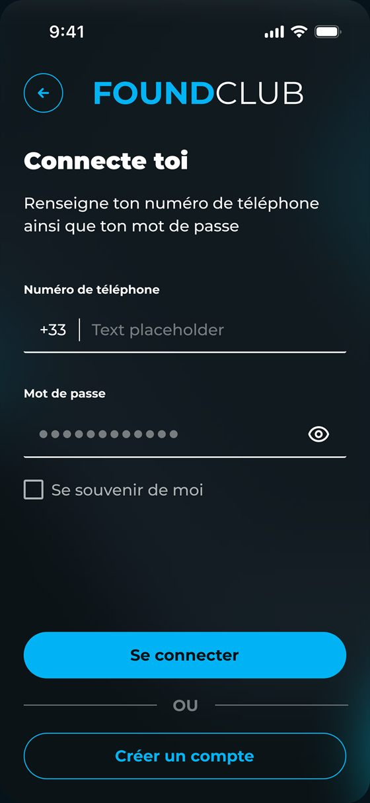
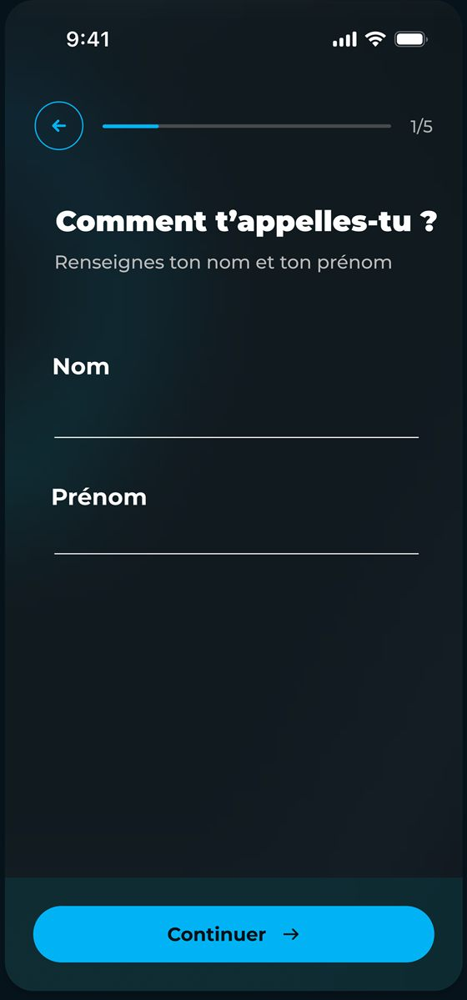
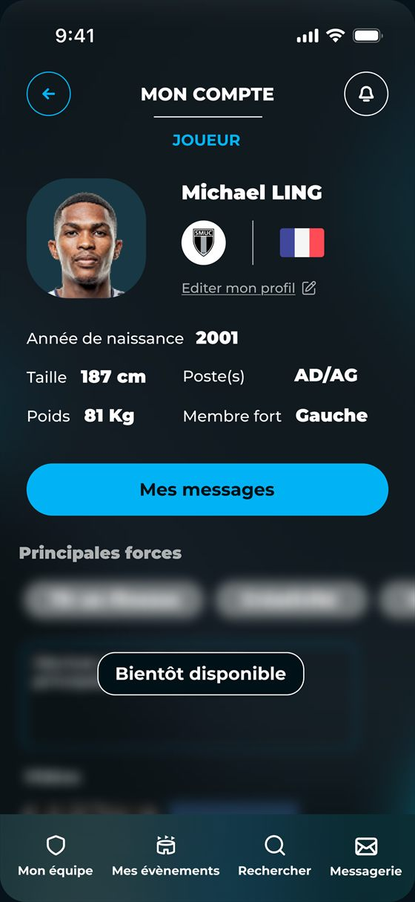

Étape 1
Créer son compte et compléter son profil
Un joueur commence par la connexion, la création du compte, puis la complétion de son profil pour être lisible par les clubs et équipes.

Connexion
Numéro de téléphone et mot de passe pour revenir rapidement dans l'app.

Inscription
Nom, prénom, statut et étapes clés pour créer le compte.

Profil sportif
Le profil reste le bon endroit pour préciser son poste, sa taille et ses informations utiles.